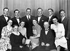

Margit Inga Greta Forsell
| Född: | 1924-07-26 Holmfors 2, Skellefteå sn. [1] |
|---|
| Levde: | 2011 Uppfinnarv 4, Skellefteå, Skellefteå lfs, Skellefteå kn. [2] |
|---|
| Vigsel: | 1946-11-30 Skellefteå sn. [3] |
|---|
| Levde: | 1970 Myckle, Skellefteå lfs, Skellefteå sn. [4] |
|---|
Personhistoria
| Årtal | Ålder | Händelse |
|---|
| 1924 |
|
Födelse 1924-07-26 Holmfors 2, Skellefteå sn [1] |
| 1928 |
4 år |
Brodern Harry Amos Forsell föds 1928-07-31 Skellefteå sfs, Skellefteå sn [5] |
| 1946 |
22 år |
Vigsel Karl (Kalle) Anshelm Vallmark 1946-11-30 Skellefteå sn [3] |
| 1964 |
40 år |
Brodern Ragnar Olaus Forsell dör 1964-10-29 Embla 4, Umeå sfs, Umeå stad [6] |
| 1965 |
40 år |
Fadern Johan Algot Forsell dör 1965-05-02 Holmfors 2, Skellefteå kn [7] |
| 1970 |
|
Levde Karl (Kalle) Anshelm Vallmark 1970 Myckle, Skellefteå lfs, Skellefteå sn [4] |
| 1979 |
54 år |
Modern Sanna Adelia (Adéle) Furberg dör 1979-05-14 Brännans ålderdomshem, Skellefteå lfs, Skellefteå kn [8] |
| 1983 |
58 år |
Brodern Ivar Eugén Forsell dör 1983-06-11 Holmfors 6:1, Skellefteå kn [9] |
| 1986 |
62 år |
Brodern Verkmästare vid Bolidens Gruvaktiebolag Birger Algot Forsell dör 1986-10-08 Bjurliden 1:522, Torget 2, Boliden, Bolidens fs, Skellefteå kn [10] |
| 1991 |
67 år |
Systern Sanna Ingrid Alida Forsell dör 1991-08-31 Anderstorg 10 /401, Skellefteå, Skellefteå lfs, Skellefteå kn [11] |
| 1996 |
71 år |
Systern Magda Kerstin Andréa Forsell dör 1996-01-04 Vedby fs, Klippan, Kristianstads län [12] |
| 1997 |
73 år |
Maken Karl (Kalle) Anshelm Vallmark dör 1997-12-26 Uppfinnarv 4, Skellefteå, Skellefteå lfs, Skellefteå kn [3] |
| 2005 |
80 år |
Brodern Daniel Lennart Forsell dör 2005-03-04 Fältjägarvägen 41 A, Skellefteå, Skellefteå lfs, Skellefteå kn [13] |
| 2010 |
86 år |
Brodern Harry Amos Forsell dör 2010-11-08 Ön 6:11, Tegs fs, Umeå kn |
| 2011 |
|
Levde 2011 Uppfinnarv 4, Skellefteå, Skellefteå lfs, Skellefteå kn [2] |
| 2012 |
87 år |
Brodern Torsten Gustaf Forsell dör 2012-03-07 Klockarhöjden, Skellefetå, Skellelteå lfs, Skellefteå kn |
Källor
| [1] | Skellefteå lfs C 1924 256/1924 k.10/15, AIIA:14 (1912-1926) fol. 290 k.7/9 |
| |
| | |
| [2] | www.hitta.se |
| |
| | |
| [3] | RTB 97, SPAR 92 |
| |
| | |
| [4] | Mtl Västerbottens län 1971 |
| |
| | |
| [5] | Mtl Västerbottens län 1981 |
| |
| | |
| [6] | AL / DOR 64 / UTD 61-67, NV - Dödsannonsregistrering 1964-11-02 |
| |
| | |
| [7] | DOR 65, UTD 61-67, NV Dödsannonsering 1965-05-05 |
| |
| | |
| [8] | SPAR 80, RTB 79 |
| |
| | |
| [9] | SPAR 90, RTB 83 |
| |
| | |
| [10] | SPAR 90, RTB 86 |
| |
| | |
| [11] | SPAR 92, RTB 91 |
| |
| | |
| [12] | SPAR 96, RTB 96, SPAR 92 |
| |
| | |
| [13] | man91 / RFV 06 |
| |
|
|  |
1945. Familjen Adéle och Algot Forsell.
Bakre raden fr.v.: Ivar, Birger, Ragnar,Torsten, Daniel, Harry
Främre raden fr.v.: Gunborg. Adele, Margit, Sanna, Algot, Magda.
|
|
{kind=link}